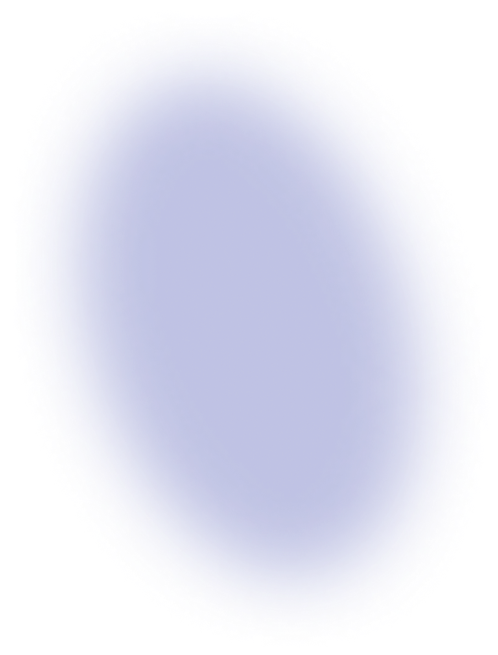
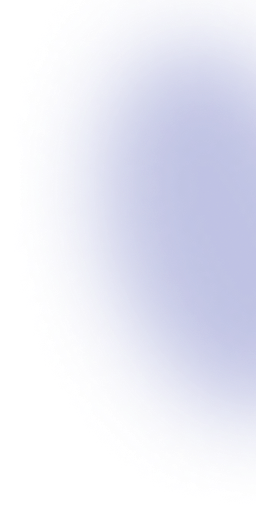
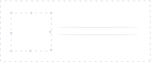

Документация
Что такое? тумба-превью
Тумба-превью или картинка-превью (от англ. thumbnail - миниатюра и preview - предпросмотр) - это изображение, которое характеризует конкретную страницу сайта. Наподобие главного заголовка, который как правило один на странице, тумба-превью также задается один раз, но она также не видна на сайте.
Как устанавливать код тумбы-превью на сайт?
Ссылка на тумбу-превью ставится специальным тегом, являющимся часть OpenGraph разметки документа.
В раздел <head> всех страниц вашего сайта необходимо вставить следующий код:
<meta property="og:title" content="Название страницы" />
<meta name="twitter:card" content="summary_large_image" />
<meta property="og:image" content="URL изображения тумбы" />
Первый тег meta отвечает за название страницы, которое будет отображаться в соцсетях / мессенджерах, когда кто-то отправляет ссылку на страницу сайта. Установка этого тега является обязательным условием, что отправляемая ссылка отобразилась в виде красивого блока-превью.
Второй тег meta со значением summary_large_image является часть стандарта, разработанного компанией Twitter и заставляет блок-превью отобразиться с большой тумбой. Если не устанавливать этот тег, то изображение тумбы будет сгенерировано в виде небольшого квадратика.
И последний, третий тег meta содержит в себе непосредственно ссылку на изображение тумбы. Для того, чтобы тумба генерировалась по выбранному вами шаблону в интерфейсе Thumber.ru, необходимо установить специальный URL, отображаемый в личном кабинете для каждого прототипа.
Что такое «прототип»? Глоссарий.
Прототип - это динамический макет тумбы-превью для вашего сайта, созданный в конструкторе сайта Thumber.ru на основе одного из доступных шаблонов.
В зависимости от выбранного тарифа может варьироваться количество доступных вебсайтов для подключения и прототипов, разрешенных для каждого вебсайта.
Метка - часть полного адреса тумбы-превью в рамках Thumber.ru, отвечающая за сбор статистики.
В рамках одного прототипа можно подключить несколько меток, чтобы, например, разделять статистику использования тумб по разным категориям сайта (если тумба ставится на новостной сайт или блог с категориями).
Можно ли использовать тумбу-превью для вывода на сайте в виде простого изображения?
Да, можно. В таком случае формат вставки немного отличается от meta:content тега.
URI текущей страницы, где размещена тумба, убирается из ссылки, но к тегу <img> добавляется атрибут referrerpolicy , чтобы при запросе тумбы браузер сам передавал URI текущей страницы вашего сайта.
Также необязательно указывать протокол для запросы тумбы, потому что в случае ее использования как картинки, браузер сделает запрос с тем же протоколом, по которому открывается ваш сайт.
<img src="//thumber.ru/1/1/{{ uuid }}/{{ image }}.{{ ext }}" referrerpolicy="no-referrer-when-downgrade" />
Как генерировать тумбы с помощью Thumber.ru?
Необходимо зарегистрироваться на сервисе, затем добавить вебсайт в личном кабинете и подтвердить его. После процедуры подтверждения появится возможность создать прототип для тумбы в рамках конкретного вебсайта.
В конструкторе прототипов можно выбрать общие параметры тумб - тип фона, эффекты черно-белого и прозрачности, скругление углов. Затем выбирается шаблон для тумбы - их несколько и различаются они расположением элементов, стилистикой отображения названия страницы, дополнительного текста.
В конце можно увидеть, как тумба будет выглядеть в жизни, нажав кнопку "предпросмотр". Она также поможет проверить, нет ли ошибок в форме-конструктора и подробно расскажет, если что-то не так.
После сохранения прототипа он попадает на проверку. Она проводится в автоматическом режиме. В этот момент код тумбы еще не выдается и его не нужно ставить на сайт.
В рамках этой проверки робот Thumber.ru убедится, что в комбинации "ваш сайт + прототип" достаточно данных для создания тумбы. Необходимыми являются логотип (если поддерживается шаблоном прототипа) и фоновое изображение, если выбран такой тип фона, а не градиент.
Какие данные требуются для корректной работы прототипа?
Фон тумбы - если выбрать в конструкторе тип фона "изображение" (также есть опция "градиент"), то прототип будет пытаться брать фоновое изображение со страницы сайта, где установлена тумба, из атрибута data-tmb-image любого тега.
Например, такой код будет корректно найден роботом Thumber.ru
<div data-tmb-image="http://mysite.com/ background.jpg"></div>
и УРЛ изображения http:// mysite.com/background.jpg попадет в прототип.А вот отсюда
< img src="http://mysite.com/ background.jpg" />
или отсюда <div>http://mysite.com/ background.jpg</div>
адрес фонового изображения получен не будет.Если фоновое изображение для всех страниц одинаковое, то УРЛ на него можно указать прямо в конструкторе прототипа. Оно используется как страховочное, потому что сначала в любом случае проверяется наличие специальной метки фона на странице сайта.
Логотип сайта - если шаблон, используемый для прототипа, поддерживает размещение логотипа вебсайта на тумбе, то логика его работы полностью аналогична фоновому изображению.
Для логотипа используется метка data-tmb-logo.
Как работает прототип после установки кода тумбы на сайт?
После создания прототипа в конструкторе и его автоматической проверки вам будет доступен код для установки на страницы сайта. Далее - дело за сервисом Thumber.ru!
Когда кто-то делится страницей вашего сайта в соцсетях или в мессенджерах, то робот этой соцсети или мессенджера идет на указанную страницу в фоновом режиме и специальным образом парсит данные оттуда. А именно - забирает название страницы, описательный текст и... правильно! тумбу-превью. А в качестве УРЛ этой тумбы установлен специальный уникальный адрес именно на ваш прототип.
Робот, в том числе, запрашивает само изображение тумбы. Thumber.ru, получая запрос на тумбу-превью, по внутренним алгоритмам определяет, была ли тумба запрошена ранее для каждой конкретной страницы, и либо генерирует ее по прототипу либо отдает ранее созданную. В случае генерации новой тумбы она загружается в сеть быстрой доставки контента (CDN), чтобы в дальнейшем отдаваться практически мгновенно (опция зависит от тарифа).
При первой генерации тумбы происходит проверка всех составляющих, аналогичная проверке при создании прототипа. Если проверка не прошла, то вы незамедлительно получите email сообщение на вашу почту с указанием обнаруженной ошибки.
После 3-х ошибок подряд прототип будет отключен, а его владельцу нужно будет устранить проблемы генерации и снова отправить его на автоматическую проверку. Вместо новых тумб будет показывать изображение-тумба по-умолчанию от сервиса Thumber.ru. При этом тумбы, ранее успешно сгенерированные по этому прототипу, будут продолжать исправно работать.
Генерация текстов на тумбе
В большинстве шаблонов, доступных для прототипов, используется 3 типа текста. Схема их работы аналогична схеме фонового изображения и логотипа.
Отличие схемы заключается в том, что текст берется не из значения атрибута, а из содержимого тега, которому задан атрибут-метка.
Для каждого типа текста предусмотрено поле в шаблоне, куда можно ввести текст по-умолчанию. Он будет отображаться на тумбе, если на странице нет блока с соответствующей меткой.
Этот функционал можно проверить с помощью предпросмотра тумбы в конструкторе, если заранее добавить нужные метки на сайт.
Главный текст - название страницы, где установлена тумба. Метка data-tmb-big_text.
Такую метку можно установить главному заголовку страницы <h1> и тогда этот текст будет браться из него.Текст-описание - вторичный (более мелкий) текст с кратким описанием страницы. Метка data-tmb-small_text.
Можно, например, установить эту метку тегу первому параграфу с текстом на странице, если он у вас есть.Слоган - аналог подписи или некоего лозунга сайта, который можно отображать на всех тумбах, генерируемых для сайта.
Метка для слогана на страницаз сайта - data-tmb-motto В отличие от двух предыдущих типов текста, которые выводятся обязательно (поиск на сайте => текст из прототипа => текст по-умолчанию), текст для слогана не выводится, если не найден на сайте и не задан в прототипе.Цепочка жизни прототипа
Все прототипы работают в течение всего времени, оплаченного по тарифу. Если тариф истек, а следующий период оплачен не был, то прототипы, не входящие в квоту бесплатного тарифа, деактивируются.
Неактивные (деактивированные) прототипы находятся в таком статусе 7 дней. После этого срока прототип окончательно удаляется вместе со всеми ранее сгенерированными тумбами.
Если в течение этого периода оплатить тариф, в квоту (лимиты) которого войдет прототип, то он будет автоматически активирован обратно и начнет работать снова. Все ранее сгенерированные тумбы станут доступны мгновенно.